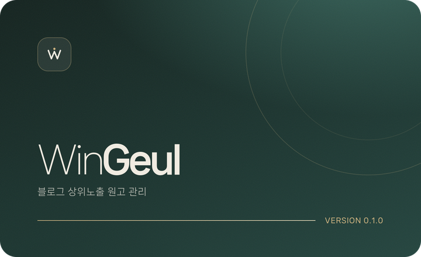
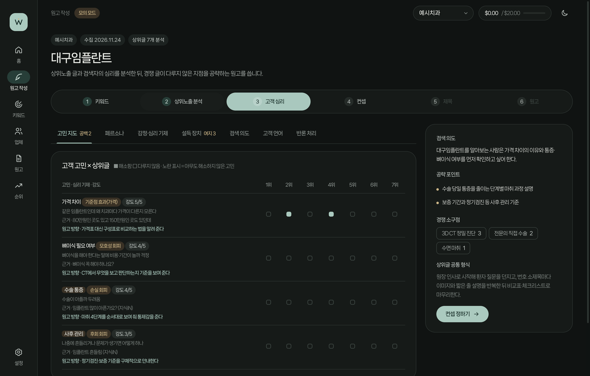
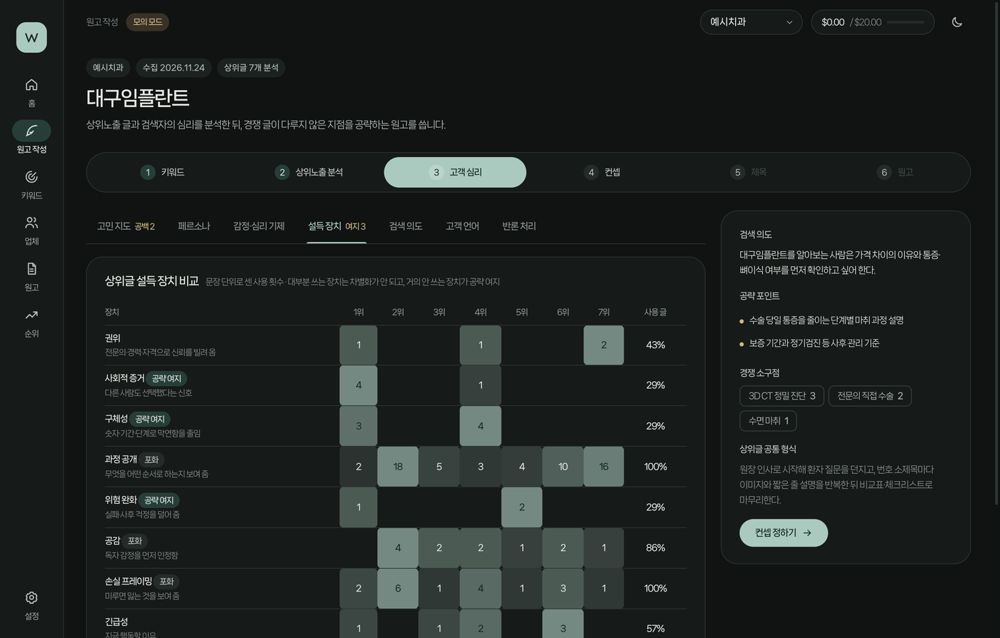
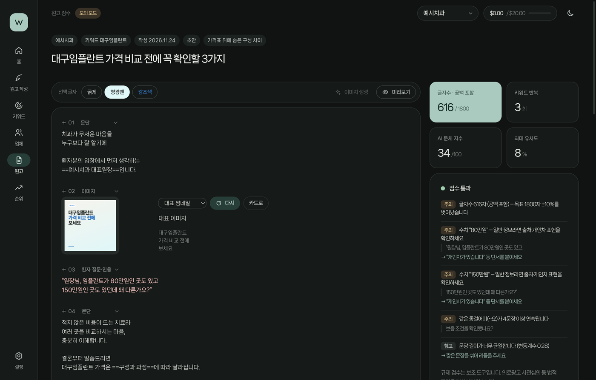
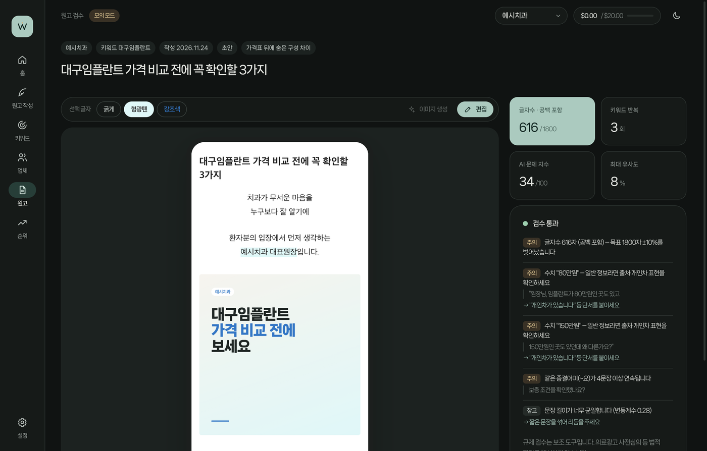

키워드 하나를 넣으면 상위 글과 검색자의 심리를 분석하고, 경쟁 글이 다루지 않은 지점을 공략하는 원고를 씁니다. 의료광고 검수, 이미지 생성, 네이버 서식 복사까지 이어집니다.
최신 버전 정보를 불러오는 중…

수집과 분석은 이 PC의 브라우저로, 글쓰기는 본인의 Claude API 키로 합니다. 서버에 데이터를 보내지 않습니다.
통합검색 구성, 블로그탭 상위 10, 자동완성·연관검색어, 지식iN 질문, 상위 글의 글자수·사진·소제목
고민 지도, 페르소나, 감정 온도, 설득 장치 비교, 검색 의도, 고객 언어, 반론 처리
업체 정보와 예시 글 형식을 그대로 따른 원고. 제목은 상위 제목과의 차별도로 채점
의료광고 규정, 근거 없는 수치, 유사문서, AI 문체, 설득 구조 점검 후 네이버용 서식 복사
예시 글 주소만 넣으면 글 골격과 서식을 자동으로 배웁니다.
썸네일과 인포그래픽을 원고 문구 그대로 만듭니다.
업종별 규정을 문장 단위로 확인합니다.
가운데 정렬, 형광펜, 질문 강조, 소제목 박스, 비교표, 전화문의 박스를 붙여넣기 한 번에.
업체마다 확인된 정보·강점·문체·연락처·원장 사진을 한 번 정리해 두고 모든 원고에 재사용합니다.
발행 주소를 등록하면 블로그탭·통합검색 순위를 기록하고 월간 보고서를 만듭니다.
고민마다 밑에 있는 심리 기제와 강도를 찾고, 상위 글이 어떤 설득 장치를 쓰는지 비교해 비어 있는 자리를 원고 방향으로 바꿉니다.




앱은 무료이고, 본인의 API 키로 쓴 만큼만 각 회사에 냅니다. 월 예산 상한을 넘으면 호출이 자동으로 멈춥니다. 아래는 추정치이며 실제 사용액은 앱의 설정·비용 화면에 기록됩니다.
| 항목 | 모델 | 예상 비용 |
|---|---|---|
| 고객 심리 분석 (키워드당, 24시간 재사용) | Claude Haiku | 약 5원 |
| 컨셉 · 제목 · 원고 | Claude Sonnet | 약 150~200원 |
| 이미지 4장 (선택) | Gemini Nano Banana 2.1 | 약 190원 |
| 이미지 카드 | 앱 안에서 렌더 | 0원 |
| 수집 · 검수 · 서식 · 순위 체크 · 키워드 발굴 | — | 0원 |
.dmg를 받아 앱을 Applications로 옮깁니다.xattr -cr /Applications/WinGeul.app 실행 후 다시 엽니다..exe를 받아 실행합니다.코드 서명 인증서가 없는 초기 버전이라 위 경고가 나옵니다. 소스는 GitHub에 공개되어 있습니다.